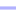

<!doctype html>
<html lang="en">
    <head>
        <meta charset="utf-8">
        <meta http-equiv="X-UA-Compatible" content="IE=edge">
        <meta name="viewport" content="initial-scale=1,user-scalable=no,maximum-scale=1,width=device-width">
        <meta name="mobile-web-app-capable" content="yes">
        <meta name="apple-mobile-web-app-capable" content="yes">
        <link rel="stylesheet" href="css/leaflet.css">
        <link rel="stylesheet" href="css/qgis2web.css"><link rel="stylesheet" href="css/fontawesome-all.min.css">
        <link rel="stylesheet" href="css/leaflet-measure.css">
        <style>
        html, body, #map {
            width: 100%;
            height: 100%;
            padding: 0;
            margin: 0;
        }
        </style>
        <title></title>
    </head>
    <body>
        <div id="map">
        </div>
        <script src="js/qgis2web_expressions.js"></script>
        <script src="js/leaflet.js"></script>
        <script src="js/leaflet.rotatedMarker.js"></script>
        <script src="js/leaflet.pattern.js"></script>
        <script src="js/leaflet-hash.js"></script>
        <script src="js/Autolinker.min.js"></script>
        <script src="js/rbush.min.js"></script>
        <script src="js/labelgun.min.js"></script>
        <script src="js/labels.js"></script>
        <script src="js/leaflet-measure.js"></script>
        <script src="data/JaringanJalan_1.js"></script>
        <script src="data/TitikUMKM_2.js"></script>
        <script>
        var highlightLayer;
        function highlightFeature(e) {
            highlightLayer = e.target;

            if (e.target.feature.geometry.type === 'LineString') {
              highlightLayer.setStyle({
                color: '#ffff00',
              });
            } else {
              highlightLayer.setStyle({
                fillColor: '#ffff00',
                fillOpacity: 1
              });
            }
            highlightLayer.openPopup();
        }
        var map = L.map('map', {
            zoomControl:true, maxZoom:28, minZoom:1
        }).fitBounds([[-6.975378811188785,110.33987345478833],[-6.969343876824222,110.34879742624574]]);
        var hash = new L.Hash(map);
        map.attributionControl.setPrefix('<a href="https://github.com/tomchadwin/qgis2web" target="_blank">qgis2web</a> &middot; <a href="https://leafletjs.com" title="A JS library for interactive maps">Leaflet</a> &middot; <a href="https://qgis.org">QGIS</a>');
        var autolinker = new Autolinker({truncate: {length: 30, location: 'smart'}});
        var measureControl = new L.Control.Measure({
            position: 'topleft',
            primaryLengthUnit: 'meters',
            secondaryLengthUnit: 'kilometers',
            primaryAreaUnit: 'sqmeters',
            secondaryAreaUnit: 'hectares'
        });
        measureControl.addTo(map);
        document.getElementsByClassName('leaflet-control-measure-toggle')[0]
        .innerHTML = '';
        document.getElementsByClassName('leaflet-control-measure-toggle')[0]
        .className += ' fas fa-ruler';
        var bounds_group = new L.featureGroup([]);
        function setBounds() {
        }
        map.createPane('pane_GoogleSatellite_0');
        map.getPane('pane_GoogleSatellite_0').style.zIndex = 400;
        var layer_GoogleSatellite_0 = L.tileLayer('https://mt1.google.com/vt/lyrs=s&x={x}&y={y}&z={z}', {
            pane: 'pane_GoogleSatellite_0',
            opacity: 1.0,
            attribution: '<a href="https://www.google.at/permissions/geoguidelines/attr-guide.html">Map data ©2015 Google</a>',
            minZoom: 1,
            maxZoom: 28,
            minNativeZoom: 0,
            maxNativeZoom: 20
        });
        layer_GoogleSatellite_0;
        map.addLayer(layer_GoogleSatellite_0);
        function pop_JaringanJalan_1(feature, layer) {
            layer.on({
                mouseout: function(e) {
                    for (i in e.target._eventParents) {
                        e.target._eventParents[i].resetStyle(e.target);
                    }
                    if (typeof layer.closePopup == 'function') {
                        layer.closePopup();
                    } else {
                        layer.eachLayer(function(feature){
                            feature.closePopup()
                        });
                    }
                },
                mouseover: highlightFeature,
            });
            var popupContent = '<table>\
                    <tr>\
                        <td colspan="2">' + (feature.properties['TYPE'] !== null ? autolinker.link(feature.properties['TYPE'].toLocaleString()) : '') + '</td>\
                    </tr>\
                    <tr>\
                        <td colspan="2">' + (feature.properties['LABEL'] !== null ? autolinker.link(feature.properties['LABEL'].toLocaleString()) : '') + '</td>\
                    </tr>\
                    <tr>\
                        <td colspan="2">' + (feature.properties['DESCR'] !== null ? autolinker.link(feature.properties['DESCR'].toLocaleString()) : '') + '</td>\
                    </tr>\
                    <tr>\
                        <td colspan="2">' + (feature.properties['LABEL3'] !== null ? autolinker.link(feature.properties['LABEL3'].toLocaleString()) : '') + '</td>\
                    </tr>\
                    <tr>\
                        <td colspan="2">' + (feature.properties['CITY'] !== null ? autolinker.link(feature.properties['CITY'].toLocaleString()) : '') + '</td>\
                    </tr>\
                    <tr>\
                        <td colspan="2">' + (feature.properties['REGION'] !== null ? autolinker.link(feature.properties['REGION'].toLocaleString()) : '') + '</td>\
                    </tr>\
                    <tr>\
                        <td colspan="2">' + (feature.properties['COUNTRY'] !== null ? autolinker.link(feature.properties['COUNTRY'].toLocaleString()) : '') + '</td>\
                    </tr>\
                    <tr>\
                        <td colspan="2">' + (feature.properties['ZIP'] !== null ? autolinker.link(feature.properties['ZIP'].toLocaleString()) : '') + '</td>\
                    </tr>\
                    <tr>\
                        <td colspan="2">' + (feature.properties['ONEWAY'] !== null ? autolinker.link(feature.properties['ONEWAY'].toLocaleString()) : '') + '</td>\
                    </tr>\
                    <tr>\
                        <td colspan="2">' + (feature.properties['TOLL'] !== null ? autolinker.link(feature.properties['TOLL'].toLocaleString()) : '') + '</td>\
                    </tr>\
                    <tr>\
                        <td colspan="2">' + (feature.properties['SPEED'] !== null ? autolinker.link(feature.properties['SPEED'].toLocaleString()) : '') + '</td>\
                    </tr>\
                    <tr>\
                        <td colspan="2">' + (feature.properties['ROADCLASS'] !== null ? autolinker.link(feature.properties['ROADCLASS'].toLocaleString()) : '') + '</td>\
                    </tr>\
                    <tr>\
                        <td colspan="2">' + (feature.properties['ROADID'] !== null ? autolinker.link(feature.properties['ROADID'].toLocaleString()) : '') + '</td>\
                    </tr>\
                    <tr>\
                        <td colspan="2">' + (feature.properties['LEVEL'] !== null ? autolinker.link(feature.properties['LEVEL'].toLocaleString()) : '') + '</td>\
                    </tr>\
                    <tr>\
                        <td colspan="2">' + (feature.properties['ENDLEVEL'] !== null ? autolinker.link(feature.properties['ENDLEVEL'].toLocaleString()) : '') + '</td>\
                    </tr>\
                    <tr>\
                        <td colspan="2">' + (feature.properties['STREETVE'] !== null ? autolinker.link(feature.properties['STREETVE'].toLocaleString()) : '') + '</td>\
                    </tr>\
                    <tr>\
                        <td colspan="2">' + (feature.properties['STREETVD'] !== null ? autolinker.link(feature.properties['STREETVD'].toLocaleString()) : '') + '</td>\
                    </tr>\
                    <tr>\
                        <td colspan="2">' + (feature.properties['STREETVC'] !== null ? autolinker.link(feature.properties['STREETVC'].toLocaleString()) : '') + '</td>\
                    </tr>\
                    <tr>\
                        <td colspan="2">' + (feature.properties['STREETVB'] !== null ? autolinker.link(feature.properties['STREETVB'].toLocaleString()) : '') + '</td>\
                    </tr>\
                    <tr>\
                        <td colspan="2">' + (feature.properties['STREETVT'] !== null ? autolinker.link(feature.properties['STREETVT'].toLocaleString()) : '') + '</td>\
                    </tr>\
                    <tr>\
                        <td colspan="2">' + (feature.properties['STREETVP'] !== null ? autolinker.link(feature.properties['STREETVP'].toLocaleString()) : '') + '</td>\
                    </tr>\
                    <tr>\
                        <td colspan="2">' + (feature.properties['STREETVI'] !== null ? autolinker.link(feature.properties['STREETVI'].toLocaleString()) : '') + '</td>\
                    </tr>\
                    <tr>\
                        <td colspan="2">' + (feature.properties['STREETVR'] !== null ? autolinker.link(feature.properties['STREETVR'].toLocaleString()) : '') + '</td>\
                    </tr>\
                </table>';
            layer.bindPopup(popupContent, {maxHeight: 400});
        }

        function style_JaringanJalan_1_0(feature) {
            switch(String(feature.properties['DESCR'])) {
                case 'Arteri Primer':
                    return {
                pane: 'pane_JaringanJalan_1',
                opacity: 1,
                color: 'rgba(255,81,0,1.0)',
                dashArray: '',
                lineCap: 'square',
                lineJoin: 'bevel',
                weight: 15.0,
                fillOpacity: 0,
                interactive: false,
            }
                    break;
                case 'Arteri Sekunder':
                    return {
                pane: 'pane_JaringanJalan_1',
                opacity: 1,
                color: 'rgba(255,81,0,1.0)',
                dashArray: '',
                lineCap: 'square',
                lineJoin: 'bevel',
                weight: 16.0,
                fillOpacity: 0,
                interactive: false,
            }
                    break;
                case 'Kolektor Primer':
                    return {
                pane: 'pane_JaringanJalan_1',
                opacity: 1,
                color: 'rgba(255,140,0,1.0)',
                dashArray: '',
                lineCap: 'square',
                lineJoin: 'bevel',
                weight: 14.0,
                fillOpacity: 0,
                interactive: false,
            }
                    break;
                case 'Kolektor Sekunder':
                    return {
                pane: 'pane_JaringanJalan_1',
                opacity: 1,
                color: 'rgba(255,200,0,1.0)',
                dashArray: '',
                lineCap: 'square',
                lineJoin: 'bevel',
                weight: 11.0,
                fillOpacity: 0,
                interactive: false,
            }
                    break;
                case 'Lokal Sekunder':
                    return {
                pane: 'pane_JaringanJalan_1',
                opacity: 1,
                color: 'rgba(178,178,255,1.0)',
                dashArray: '',
                lineCap: 'square',
                lineJoin: 'bevel',
                weight: 7.0,
                fillOpacity: 0,
                interactive: false,
            }
                    break;
            }
        }
        map.createPane('pane_JaringanJalan_1');
        map.getPane('pane_JaringanJalan_1').style.zIndex = 401;
        map.getPane('pane_JaringanJalan_1').style['mix-blend-mode'] = 'normal';
        var layer_JaringanJalan_1 = new L.geoJson(json_JaringanJalan_1, {
            attribution: '',
            interactive: false,
            dataVar: 'json_JaringanJalan_1',
            layerName: 'layer_JaringanJalan_1',
            pane: 'pane_JaringanJalan_1',
            onEachFeature: pop_JaringanJalan_1,
            style: style_JaringanJalan_1_0,
        });
        bounds_group.addLayer(layer_JaringanJalan_1);
        map.addLayer(layer_JaringanJalan_1);
        function pop_TitikUMKM_2(feature, layer) {
            layer.on({
                mouseout: function(e) {
                    for (i in e.target._eventParents) {
                        e.target._eventParents[i].resetStyle(e.target);
                    }
                    if (typeof layer.closePopup == 'function') {
                        layer.closePopup();
                    } else {
                        layer.eachLayer(function(feature){
                            feature.closePopup()
                        });
                    }
                },
                mouseover: highlightFeature,
            });
            var popupContent = '<table>\
                    <tr>\
                        <th scope="row">Pemilik</th>\
                        <td>' + (feature.properties['Pemilik'] !== null ? autolinker.link(feature.properties['Pemilik'].toLocaleString()) : '') + '</td>\
                    </tr>\
                    <tr>\
                        <th scope="row">Produk</th>\
                        <td>' + (feature.properties['Produk'] !== null ? autolinker.link(feature.properties['Produk'].toLocaleString()) : '') + '</td>\
                    </tr>\
                    <tr>\
                        <th scope="row">No Telp.</th>\
                        <td>' + (feature.properties['No Telp.'] !== null ? autolinker.link(feature.properties['No Telp.'].toLocaleString()) : '') + '</td>\
                    </tr>\
                    <tr>\
                        <td colspan="2">' + (feature.properties['Gambar'] !== null ? autolinker.link(feature.properties['Gambar'].toLocaleString()) : '') + '</td>\
                    </tr>\
                </table>';
            layer.bindPopup(popupContent, {maxHeight: 400});
        }

        function style_TitikUMKM_2_0() {
            return {
                pane: 'pane_TitikUMKM_2',
                radius: 10.4,
                opacity: 1,
                color: 'rgba(255,255,255,1.0)',
                dashArray: '',
                lineCap: 'butt',
                lineJoin: 'miter',
                weight: 2.0,
                fill: true,
                fillOpacity: 1,
                fillColor: 'rgba(219,30,42,1.0)',
                interactive: true,
            }
        }
        map.createPane('pane_TitikUMKM_2');
        map.getPane('pane_TitikUMKM_2').style.zIndex = 402;
        map.getPane('pane_TitikUMKM_2').style['mix-blend-mode'] = 'normal';
        var layer_TitikUMKM_2 = new L.geoJson(json_TitikUMKM_2, {
            attribution: '',
            interactive: true,
            dataVar: 'json_TitikUMKM_2',
            layerName: 'layer_TitikUMKM_2',
            pane: 'pane_TitikUMKM_2',
            onEachFeature: pop_TitikUMKM_2,
            pointToLayer: function (feature, latlng) {
                var context = {
                    feature: feature,
                    variables: {}
                };
                return L.circleMarker(latlng, style_TitikUMKM_2_0(feature));
            },
        });
        bounds_group.addLayer(layer_TitikUMKM_2);
        map.addLayer(layer_TitikUMKM_2);
        var baseMaps = {};
        L.control.layers(baseMaps,{' Titik UMKM': layer_TitikUMKM_2,'Jaringan Jalan<br /><table><tr><td style="text-align: center;"></td><td>Arteri Primer</td></tr><tr><td style="text-align: center;"></td><td>Arteri Sekunder</td></tr><tr><td style="text-align: center;"></td><td>Kolektor Primer</td></tr><tr><td style="text-align: center;"></td><td>Kolektor Sekunder</td></tr><tr><td style="text-align: center;"></td><td>Lokal Sekunder</td></tr></table>': layer_JaringanJalan_1,"Google Satellite": layer_GoogleSatellite_0,}).addTo(map);
        setBounds();
        </script>
    </body>
</html>
